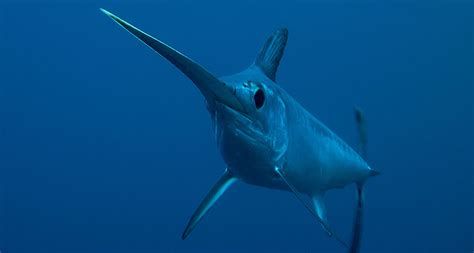
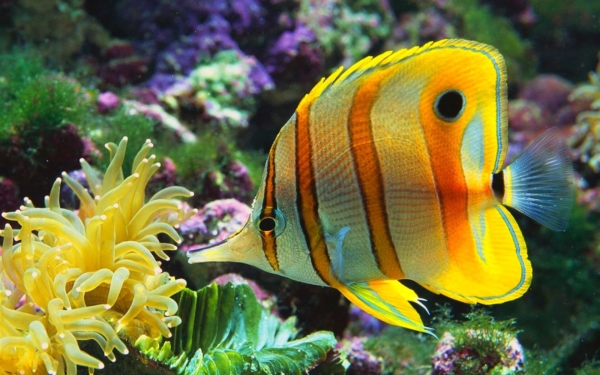
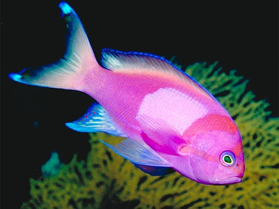
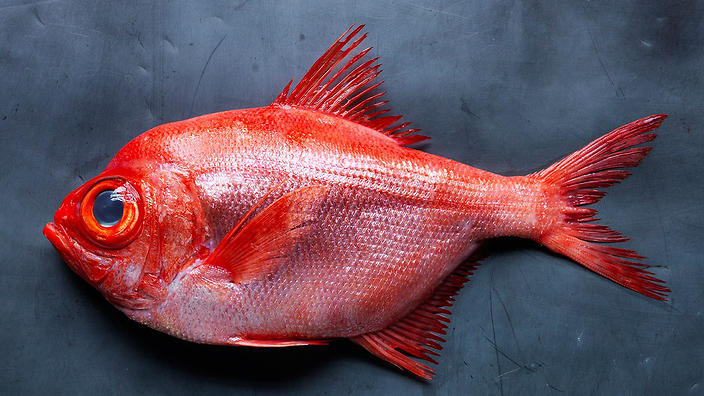
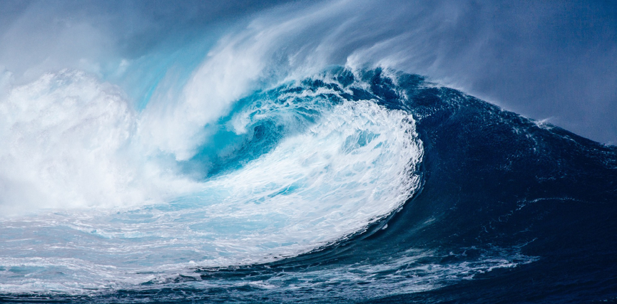
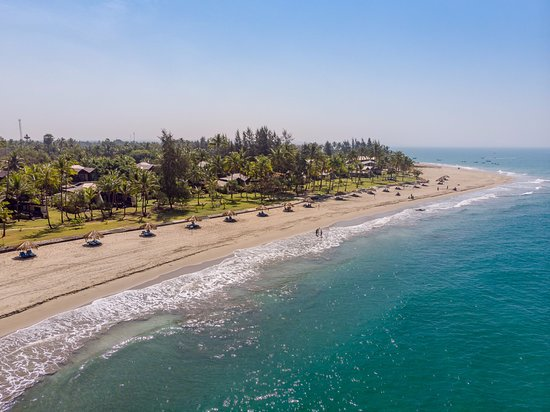
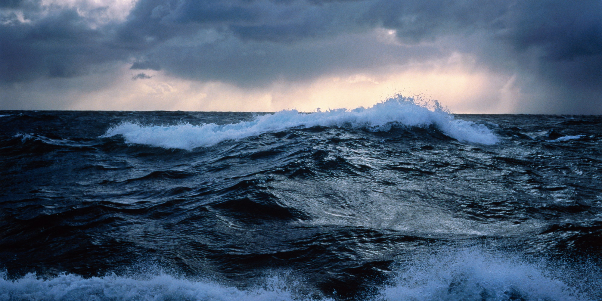

Quotes
My Fishies

- Species: Parrot Fish
- Length: 8
- Name: Angus
- Location: Sea of Google
- Food: Popcorn

- Species: Swordfish
- Length: 320
- Name: Chester
- Location: Atlantic Ocean
- Food: Herring

- Species: Trigger Fish
- Length: 12
- Name: Bubbles
- Location: Bay of Bengal
- Food: Baby squid

- Species: Angel Fish
- Length: 8
- Name: Michael
- Location: Pacific Ocean
- Food: Plankton

- Species: Elegant Corydoras
- Length: 3
- Name: Sweet
- Location: Caribbean Sea
- Food: Algae

- Species: Orange Roughy
- Length: 16
- Name: Dexter
- Location: Southern Ocean
- Food: Anchovies
Harvesting Locations

Together the snailfish, eelpouts and notothenioids (which includes cod icefish and several other families) account for almost 9⁄10 of the more than 320 described fish species of the Southern Ocean.

In the Caribbean Sea there are around 1,000 documented species of fish, including sharks (bull shark, tiger shark, silky shark and Caribbean reef shark), flying fish, giant oceanic manta ray, angel fish, spotfin butterflyfish, parrotfish, Atlantic Goliath grouper, tarpon and moray eels.

The Bay of Bengal is full of biological diversity, diverging amongst coral reefs, estuaries, fish spawning and nursery areas, and mangroves. The Bay of Bengal is one of the World's 64 largest marine ecosystems.

Due to its enormous size, the Pacific Ocean is home to a wide array of marine creatures, some of which are found nowhere else on earth.